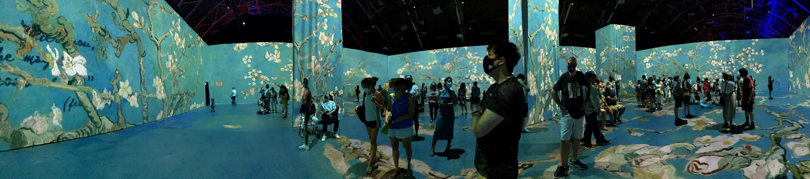
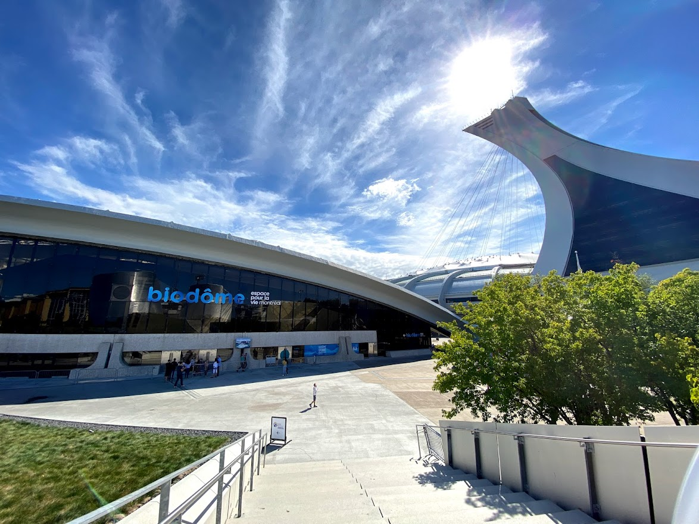

The Highlights of the Summer
The Paddleboard Arc
Besides seeing friends or being online, I wanted to get into a hobby of some sort that allows me to get out more. I looked into canoeing, camping, bird watching, skateboarding and kayaking. It was a toss-up between kayaking or camping, but I was leaning more towards a water sport. I was driving past Mooney's Bay beach and was someone standing on a paddleboard. When I got home, I searched up different paddleboards and quickly concluded that I wanted to make this my summer hobby.
Fun fact: I got a paddleboard from a new Montreal company called Maddle. Funny enough, one of my past co-workers modelled for them, and that’s how I learnt about it.
Van Goghing to See Art Arc
I was able to visit Beyond Van Gogh Ottawa this summer. It was cool to see this exhibit and learn more about Van Gogh himself. The projections on the wall of this art were amazing to witness. The problem with it was the number of people there. It was pretty busy, and people didn't care about your personal space. Overall, the experience was great, and I would recommend it to people.
Ottawa Citizen was able to capture the exhibit experience on camera. The video also included some song clips that were playing in the background.
Biodôme and Montreal Arc
The last weekend before school, I was able to do a small trip to Montreal with my boyfriend. We got the chance to visit the Biodôme! I was really excited to see the different animals. There were many different species we saw, plus we got to see a cool monkey.
Besides the animals, we were able to get our hands on Krispy Kreme! Donuts are my favourite dessert. If I were to rank Krispy Kreme, it would be my top three donuts. We did some back-to-school shopping and went to some huge fancy mall called CF Carrefour Laval.